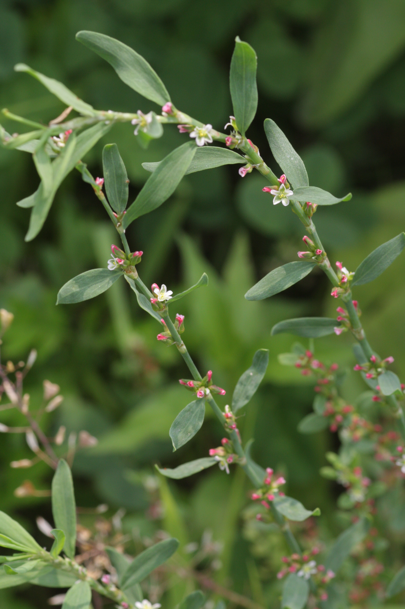
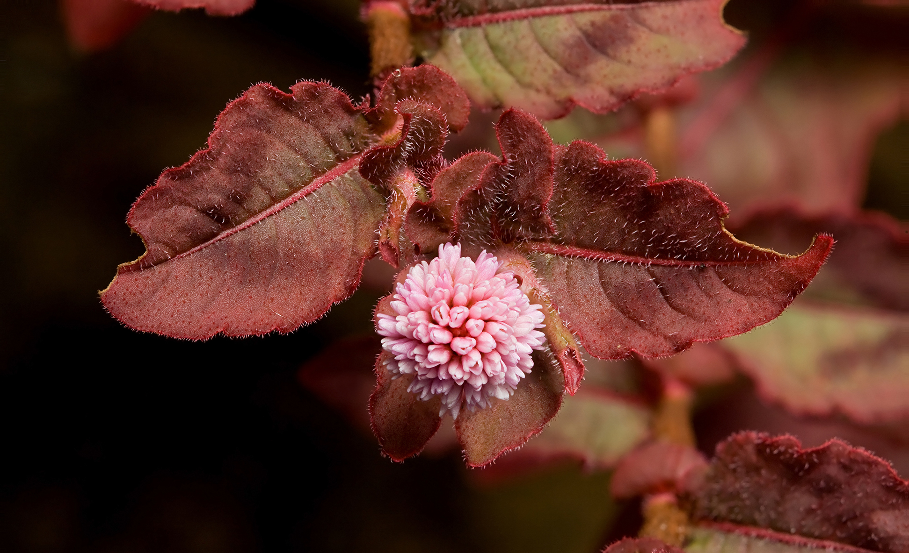
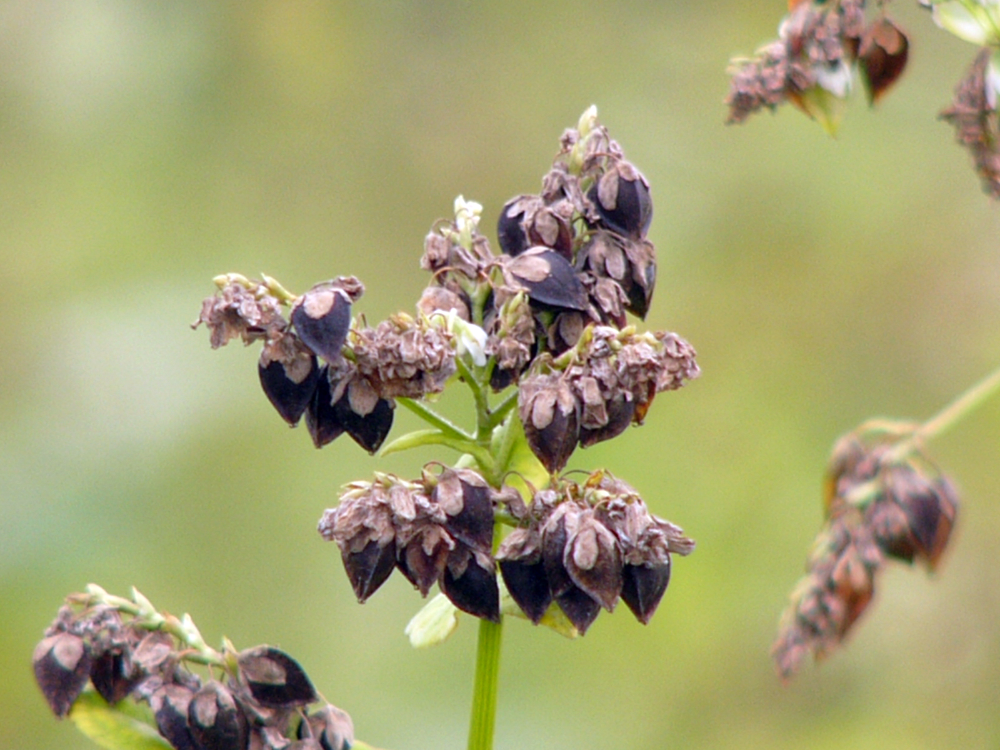
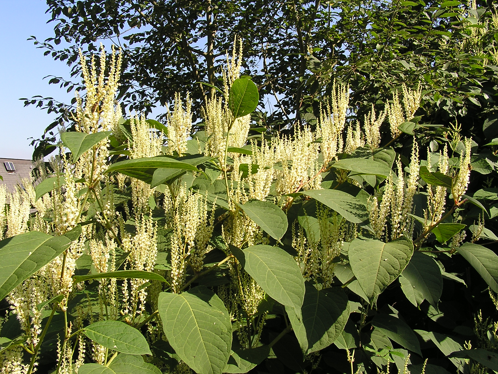
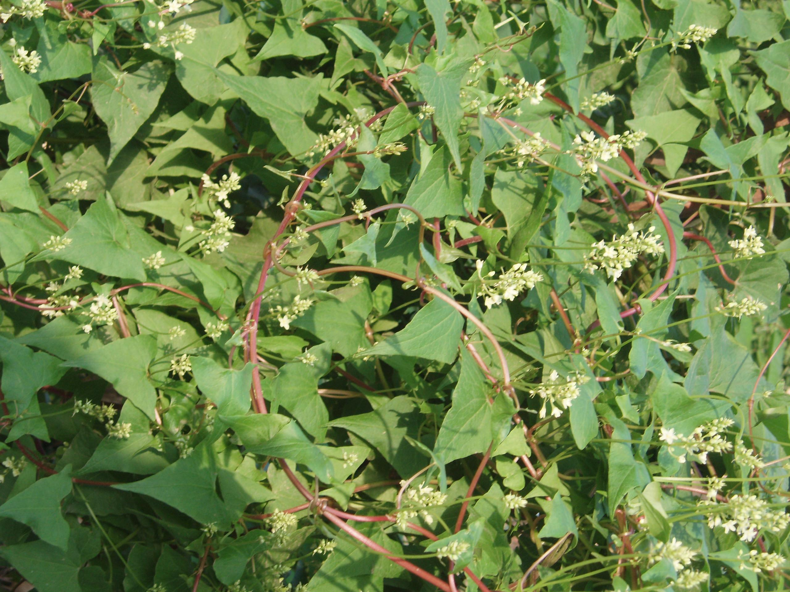
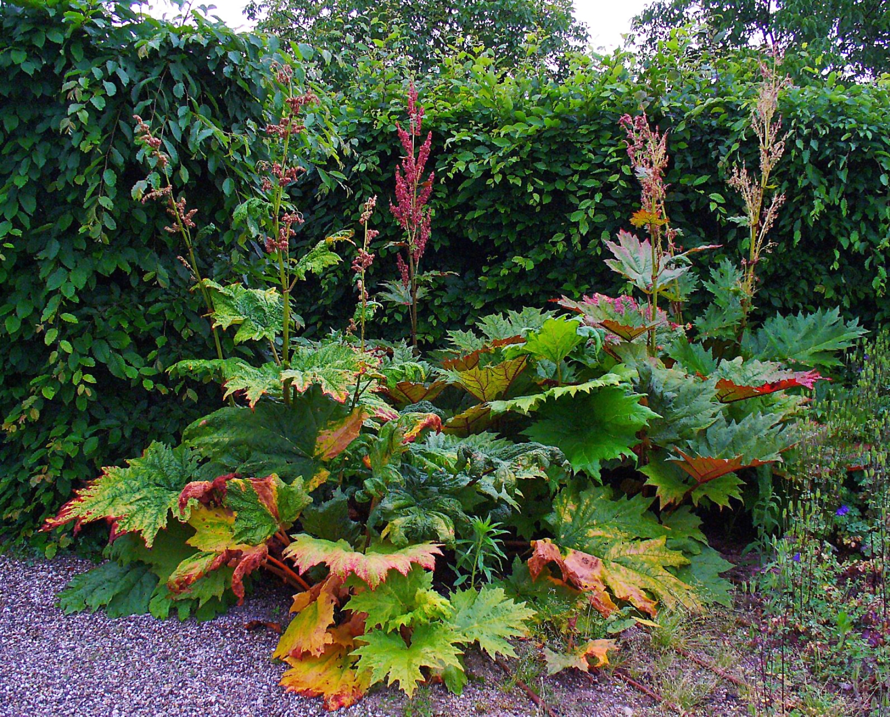

Polygonaceae
knotweed/buckwheat family
|  Polygonum aviculare (common knotgrass) from Wikimedia Commons by Dalgial - Own work, CC BY-SA 3.0 |
 Persicaria capitata (pink knotweed) from Wikimedia Commons by JJ Harrison - Own work, CC BY-SA 3.0 |
|  Fagopyrum esculentum (buckwheat) from Wikimedia Commons by K.G.Kirailla, CC BY-SA 3.0 |
 Reynoutria japonica (Japanese knotweed) from Wikimedia Commons by MdE - own photo, CC BY-SA 3.0 de |
{kind=link}
{kind=link}
{kind=link}
{kind=link}
botanical characteristics
Botany in a Day, p. 113 | "Polygonaceae", Wikipedia
- growth form
- most members are perennial herbaceous plants, but trees, shrubs and vines are also present
- stems/leaves
- simple, toothless leaves
- leaves are alternate
- swollen joints/knee-like nodes on the stems
- each leaf has a peculiar pair of fused, sheathing stipules, known as an ochrea
- flowers
- many small flowers in clusters or spikes
- 5 or 6 sepals, sometimes colored like petals and often in two layers
- 0 petals
- reproductive structures
- 3-9 stamens
- ovary is positioned superior and consists of 3 united carpels
- matures as a dry seed, usually brown or black and triangular or lens-shaped, sometimes with wings
distribution
"Polygonaceae", Wikipedia
- about 1200 species distributed into about 48 genera
"Angiosperm families - Polygonaceae Juss.", DELTA
- frigid zone (a few), temperate (mainly), sub-tropical to tropical (a few)
- widespread, but absent from Africa, tropical South America, West Indies, and Southeast Asia except New Guinea
ecological roles
"Polygonaceae", Wikipedia
- Polygonaceae contain some of the most prolific weeds, including species of Persicaria, Rumex, and Polygonum, as well as Japanese knotweed
common pharmacological constituents
"Angiosperm families - Polygonaceae Juss.", DELTA
- sugars transported as sucrose (in Coccoloba, Ruprechtia, Triplaris); not cyanogenic; alkaloids present, or absent; anthraquinones detected (6 genera); polyacetate derived; arbutin absent; iridoids not detected; betalains absent (where sought); saponins/sapogenins present, or absent; proanthocyanidins present (usually), or absent; cyanidin, or delphinidin, or cyanidin and delphinidin; flavonols present, or absent; quercetin, or kaempferol and quercetin, or kaempferol, quercetin, and myricetin; ellagic acid absent (8 species, 4 genera); aluminium accumulation not found; plants accumulating free oxalates; sieve-tube plastids S-type
Botany in a Day, p. 113
- sour juice from oxalic acid is common in this family
- many plants also contain tannic acid and anthraquinone glycosides
patterns in medicinal actions
- follows pattern of families with nutritive members/foodstuffs having a toxic edge
- teaches balance
- between astringent/toning/tightening action from tannins to laxative/purgative action from anthraquinone glycosides
- between alterative/anti-inflammatory action to inducing inflammation from oxalic acid
- strengthening, supports liver and blood
traditional/cultural uses
"Polygonaceae", Wikipedia
- several species are cultivated as ornamentals
- a few species of Triplaris provide lumber
- the fruit of the sea grape (Coccoloba uvifera) is eaten, and in Florida, jelly is made from it and sold commercially
- the seeds of two species of Fagopyrum, known as buckwheat, are eaten in the form of groats or used to make flour
- the petioles of rhubarb (Rheum rhabarbarum and hybrids) are a food item
- the leaves of the common sorrel (Rumex acetosa) are eaten in salads or as a leaf vegetable
warnings
Botany in a Day, p. 113
- some members have high concentrations of anthraquinones, which can be strongly purgative and/or toxic
extra information
"Polygonaceae", Wikipedia
- name of the type genus Polygonum comes from the Greek for 'many knees', referring to the stem nodes
- alternatively, it may mean 'many seeds'
prominent genera
- Bistorta (bistorts, snakeroots)
- Coccoloba (incl. seagrape)
- Eriogonum (wild buckwheats)
- Fagopyrum (buckwheats)
- Oxyria (mountain sorrels)
- Persicaria (knotweeds, smartweeds)
- Polygonum (smartweeds, knotweeds)
- Reynoutria (knotweeds)
- Rheum (rhubarbs)
- Rumex (docks, sorrels)
plant highlights
see list of materia medica entries here
Reynoutria multifloria
|  from Wikimedia Commons by Fanghong，CC BY-SA 3.0 |
common names: he shou wu, Chinese knotweed, fo-ti en español: fo-ti name in TCM: hé shǒu wū (何首烏) |
{kind=link}
description
"Reynoutria multiflora", Wikipedia
- herbaceous perennial vine growing from a woody tuber
- leaves are broad and arrowhead-shaped, with an entire margin
- flowers are white or greenish-white, produced on short, dense panicles
- fruit is an achene
distribution
"Reynoutria multiflora", Wikipedia
- native to central and southern China
medicinal/magical uses
The Modern Herbal Dispensatory, p. 246
- anticholesteremic, blood building, glandular, tonic, neutral, moistening
- considered an anti-aging tonic, believed to prevent and possibly reverse the greying of hair when taken regularly
- helps balance blood sugar levels and improve thyroid function
preparation methods
The Modern Herbal Dispensatory, p. 246
- decoction
- tincture
- powder
warnings
The Modern Herbal Dispensatory, p. 246
- not for persons with diarrhea, weak digestion, or heavy mucus congestion
- possible liver toxicity when used in large amounts
Rheum spp.
|  from Wikimedia Commons by H. Zell - Own work, CC BY-SA 3.0 |
common names: rhubarb en español: ruibarbo name in TCM: yào yòng dà huáng (药用大黄) |
{kind=link}
description
"Rheum", Wikipedia
- herbaceous perennials growing from fleshy roots
- upright growing stems and mostly basal, deciduous leaves growing from short, thick rhizomes
- inflorescences are terminal and panicle-like with pedicels
- hermaphrodite flowers consist of a whitish green to pinkish green, hairless and campanulate (bell-shaped) perianth, composed of six tepals
- fruits are a three-sided achene with winged sides, and the seeds are albuminous with a straight or curved embryo
distribution
"Rheum", Wikipedia
- native to eastern Europe, southern and eastern temperate Asia, with a few reaching into northern tropical Asia
- cultivated in Europe, Asia, and North America
medicinal/magical uses
The Modern Herbal Dispensatory, p. 314
- Rheum palmatum
- antacid, laxative, drying, cooling
- common ingredient in stimulant laxatives
- also used in small doses as a digestive tonic
The New Age Herbalist, p. 98
- Rheum officinale
- in small doses, astringent tannins make it effective for diarrhea and tonic to the digestive system
- in large doses, irritating anthraquinones produce a cathartic laxative effect
- used in TCM to treat high fevers
preparation methods
The Modern Herbal Dispensatory, p. 314
- tincture
- powder
warnings
The Modern Herbal Dispensatory, p. 314
- some people react with abdominal pain
- take with ginger and/or nervine herbs to counteract
The New Age Herbalist, p. 98
- avoid with arthritis, kidney disease, urinary problems, and during pregnancy
sources
"Angiosperm families - Polygonaceae Juss." on DELTA - DEscription Language for TAxonomy. Retrieved 2 September 2025.
Easely, Thomas and Steven Horne. The Modern Herbal Dispensatory (2016)
Elpel, Thomas J. Botany in a Day: The Patterns Method of Plant Identification (2021)
Goldberg Blackthorn, Samantha. Ace of Cups Herbal Medicine and Botanical Magic Herbal School (2024)
Mabey, Richard et al. The New Age Herbalist (1988)
"Polygonaceae" on Wikipedia. Retrieved 2 September 2025.
"Reynoutria multiflora" on Wikipedia. Retrieved 2 September 2025.
"Rheum" on Wikipedia. Retrieved 2 September 2025.